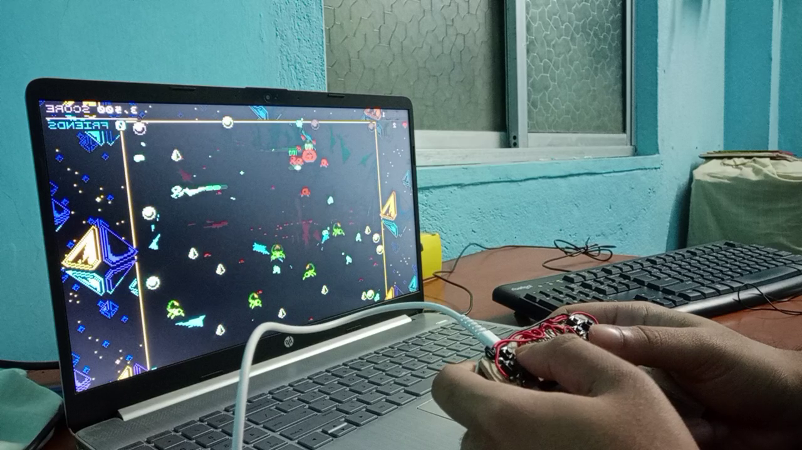

🎙️ And now... here it is — the final result: The Paperboard Controller.
showing off the gamepad.mp4

🎙️ And now... here it is — the final result: The Paperboard Controller.
showing off the gamepad.mp4
🎙️ I tested it for a while, and everything worked just fine, So... time to play some games!
following demonstration footages needs to be flipped horizontally, because these footages represents the mirror images of the original view
gamepad test.png

For the following game demonstrations, you must mention the name of the game on the screen while displaying their footage.
Grand Theft Auto Vice City
Satryn
Need for Speed: Most Wanted 2005
Super Mario World 1990
In the gta vicecity demo, you will find the following scenes, car driving scenes, tank rampage and a final stunt, in this exact sequence. Put small portions of each scenes in the final demonstration video.
NFS is the best demonstration footage, so display it for a long time, viewers would love it. For the remaining games keep them up for short interval, just enough that viewer can see that I am playing it with my gamepad.
You decide in which sequence you wanna display the games, my suggestion is "Mario->Satryn->GTA->NFS"
I have added 2 demonstration footages of Super Mario, you decide from which you wanna take the final clip
Finally, I wanna add that, the creative decision is yours, you can change the display sequence if needed, change the sounds or even make something like a film trailer, if you wish.
😉
super mario.png

satryn-win.png

gta vicecity.png

Nfs 2005.png

🎙️ Thanks for watching Folks, have a nice day.
Use your imagination...